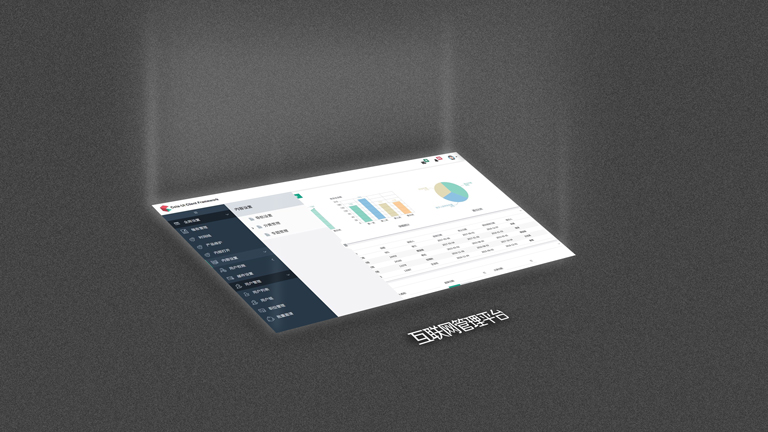
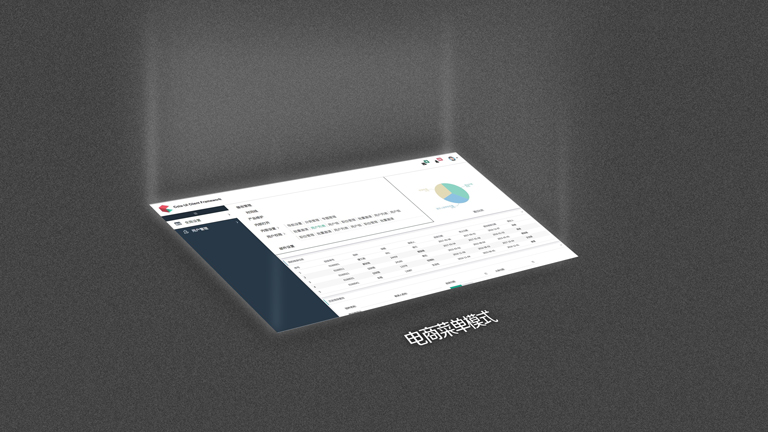
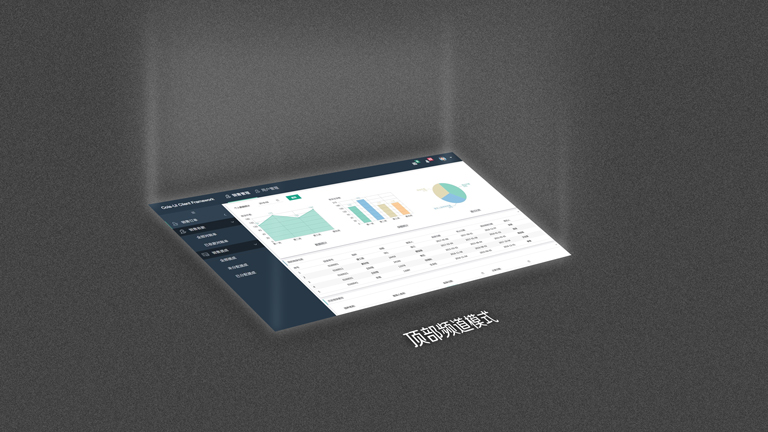

Cola Frame的功能特点
Cola Frame 桌面应用前端基础框架。包含了主框架常用的界面以及功能。 如登录登出页、500、404界面，消息系统和内部页面控制框架Title和Favicon，Ajax 请求状态管理等。
内部标签管理
Cola Frame默认使用内部标签Tab模式打开菜单页面。
多样化菜单
Cola Frame 总结了大部分系统的设计模式，抽象出了三套常用的主框架界面排版模式。
1. 互联网管理平台模式
此模式为目前互联网管理平台较为流行的管理系统菜单结构。适合多层菜单结构使用。

2. 电商菜单模式
此菜单模式为最为快捷和定位的菜单，用户交互较好，适合三层菜单结构使用。

3. 顶部菜单模式
此菜单模式也是比较传统的设计，主菜单在顶层排列模式，适合频道模式分组的多层菜单结构使用，但频道不宜过多。

消息系统
Cola Frame 内置消息系统，已长轮询模式获取系统消息。 内部业务界面可通过Api
App.refreshMessage();进行刷新主框架消息。
框架内部登录
比较常见的框里系统的登录都已外部登录也登录为主。这种模式在用户体验和使用上极为不便。 如业务操作人员填写一分字段较多的表单时，如果当点击提交时后台发现session timeout。在此种场景下众多平台的解决方案是强redirect 或者弹出外部登录界面，容易出现操作人员喜辛苦填写的表单丢失等情况。
考虑到以上场景Cola-Frame内置了框架内部登录系统。 服务端只需要返回Status 401 Cola Frame 自动弹出内置登录框。
基本参数设定
在开始进行实际的开发之前我们首先需要确定一些基本的参数设置。Cola Shell项目的配置参数通常都被放在/public/common/common.js中，
在这个文件中我们可以找到这样一段内容。各种默认参数值应该在这里进行配置。
/* 系统默认值 */
var properties = {
mainView: "./frame/main",
loginPath: "./login",
longPollingTimeout: 0,
longPollingInterval: 2000,
"service.messagePull": "./service/message/pull",
"service.login": "./service/account/login",
"service.logout": "./service/account/logout",
"service.menus": "./service/menus",
"service.user.detail": "./service/user/detail",
"message.action": {
path: "http://cola-ui.com",
type: "subWindow",
label: "我的消息",
closeable: true
},
"task.action": {
path: "http://cola-ui.com",
type: "subWindow",
label: "我的任务",
closeable: true
},
"app.logo.path": "./resources/images/logo.png",
"app.name": "Cola-UI Client Framework",
title: "Cola-Frame"
};
这里支持的参数目前有以下这些：
- mainView - 系统主框架界面地址
- loginPath - 登录界面路径
- longPollingTimeout - 消息长轮询请求超时时间
- longPollingInterval - 框架长轮询周期
- service.messagePull - 消息接口
- service.login - 登录接口
- service.logout - 登出接口
- service.menus - 系统菜单接口
- service.user.detail - 获得当前用户详细信息接口
- message.action - 单击右上角消息按钮后的响应配置
- task.action - 单击右上角任务按钮后的响应配置
- app.logo.path - 系统Logo图片地址
- app.name - 系统名称
- title - 系统Title 浏览器标签标题
App对象
Cola Frame内置一个App对象，通过该对象可以完成一些跟App相关的操作。App中包含的方法有以下一些...
prop(key, value)
基本参数设定，具体请参考 基本参数设定 。
open(path, config)
打开一个新的链接。 但是当我们要打开一个应用内的链接时，如果使用window.open()是会导致整个页面刷新的，而利用App.open()是不会导致整体刷新的，即实现的效果是应用内部的标签Tab的新增或者切换。 这里的path参数是要打开的目标地址 这里的config参数是修饰参数，config是一个JSON对象，其中包含下列的子属性：
- type - 可选配置，是描述目标路径的打开形式,如打开一个新的浏览器标签、打开框架内部标签。type=subWindow 或 "" 都在框架内部打开一个标签，其他都打开新的浏览器标签。
- closeable - 可选配置，是描述当前打开的页面是否支持关闭，默认值为true （type=subWindow 模式时有效）
- icon - 当subWindow模式打开时的标签图标class name。（type=subWindow 模式时有效）
- label - 当subWindow模式打开时的标签name（type=subWindow 模式时有效）
close(path)
关闭一个内部界面. 参数path是必选参数，cola Frame 内部用path作为key进行管理Tab。
goLogin()
显示登录页。
此方法可以传入回调方法
- 回调方法在登录成功之后被触发。
setTitle(title)
设置浏览器标签的标题。
setFavicon(path)
设置浏览器标签小图标。path参数为图标图片的地址
refreshMessage()
刷新框架消息。
在应用业务界面引入了Cola Frame 提供的/common/common.js的前提下都可调用。
后台服务接口
要使Cola Frame的App能够良好的工作，需要实现几个基本的后端服务接口，以便于前端界面得到一些关键的信息。 这些接口都是Ajax形式发出，其URL符合Restful的规则，且Response都是JSON格式的。
如果您是用Java开发后端接口的话，建议您使用Spring MVC来搭建整个Restful的服务架构， 具体可以参考我们提供的 https://github.com/Cola-Org/cola-ui-spring-rest-example 示例。
如果你使用其他方式来搭建后端接口的话，请注意为这些服务的Response设置正确的ContentType，即Content-Type:application/json。
否则jQuery的默认处理逻辑并不会将Response的内容转换成JSON。
获取应用菜单接口
用于获得获取登录状态、登录用户信息、系统可用版本等基本信息的接口。该接口会在App已启动时由客户端第一时间自动发起，以便于尽早确认App是否已登录等关键信息。
- URL:
./service/menus。 - Method: GET
如果不想使用这个路径的话可以在common.js中修改Cola Frame的service.menus参数。
该接口的Response的结构是这样的...
[
{
icon: "icon setting",
label: "内容设置",
menus: [
{
icon: "icon payment",
label: "导航设置",
type: "subWindow",
closeable: true,
path:"/path"
},
{
icon: "icon edit",
label: "分类管理",
menus: [
{
icon: "icon sidebar",
label: "用户列表",
type: "subWindow",
closeable: true,
path: "/example/time-line"
}, {
icon: "icon sitemap",
label: "用户组",
type: "subWindow",
closeable: true,
path: "/example/time-line"
}
]
},
{
icon: "iconfont icon-zhucerenzheng",
label: "专题管理",
type: "subWindow",
closeable: true,
path:"/path"
}
]
}
]
登录
Cola Shell已经默认提供好了一套登录界面，如果不使用Cola Shell提供的登录界面，那么你可以直接跳过这一段内容。 如果要使用这套界面你只需要在后台为它定义一个登录的服务接口就好了。
- URL:
/service/account/login。 - Method: POST
- Form Data:
- userName: 登录账户名
- password: 口令
如果你希望改变这个服务的路径可以在common.js中修改Cola Frame的service.login参数。
该接口的Response的结构是这样的...
{
type: true/false, // 登录是否成功
message: "" // 如果登录失败则输出失败的原因
}登出
Cola Shell已经默认提供好了一套登录界面，如果不使用Cola Shell提供的登录界面，那么你可以直接跳过这一段内容。 如果要使用这套界面你只需要在后台为它定义一个登录的服务接口就好了。
- URL:
/service/account/logout。 - Method: POST
如果你希望改变这个服务的路径可以在common.js中修改Cola Frame的service.logout参数。
该接口的Response的结构是这样的...
{
type: true/false, // 登出是否成功
message: "" // 如果登录失败则输出失败的原因
}拉取消息
用于获得后台消息的接口。
- URL:
./service/message/pull。 - Method: GET
如果不想使用这个路径的话可以在common.js中修改Cola Frame的service.messagePull参数。
该接口的Response的结构是这样的...
[
{
type:"message",
content:12
},
{
type:"task",
content:8
}
]
获得用户详细信息
用于获得获取登录用户信息的接口。
- URL:
./service/user/detail。 - Method: GET
如果不想使用这个路径的话可以在common.js中修改Cola Frame的service.menus参数。
该接口的Response的结构是这样的...
{
id: "u0001"
name: "Alex Tong"
avatar: "/resources/images/avatars/alex.png"
}